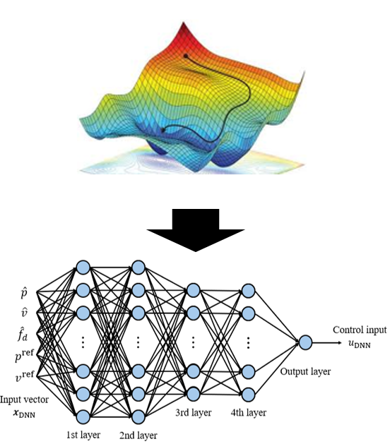
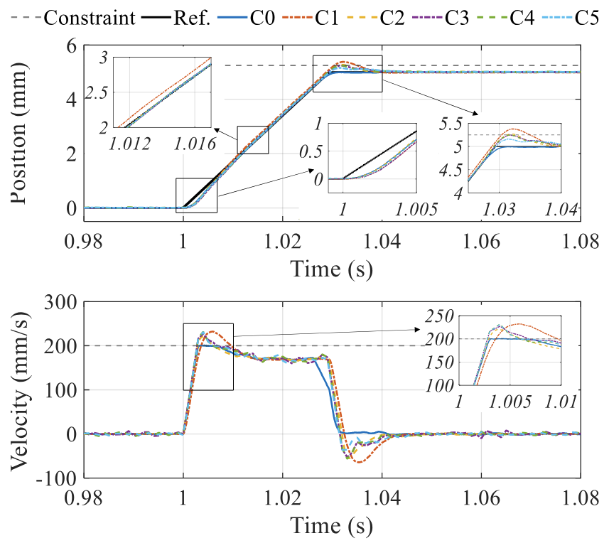

DNN-Approximated Offset-Free MPC on FPGA for 10-kHz Constrained Control of 6-DOF Magnetic Levitation System


Model predictive control (MPC) is well known for its high performance in motion control applications. However, due to the requirement of kHz-level sampling rates in 6-DOF magnetic levitation systems, MPC has rarely been applied to such systems. I develop an MPC structure lightweight enough for 10 kHz real-time control while achieving offset-free tracking performance, with a DNN approximating the QP solver and implemented on FPGA.
C.H. Kim, H.M. Yoon, J.W. Jeong, E.K. Kim and J.Y. Yoon, "DNN-Approximated Offset-Free MPC on FPGA for 10-kHz Constrained In-Plane Control of 6-DOF Magnetic Levitation System," IEEE Transactions on Industrial Informatics (under review).